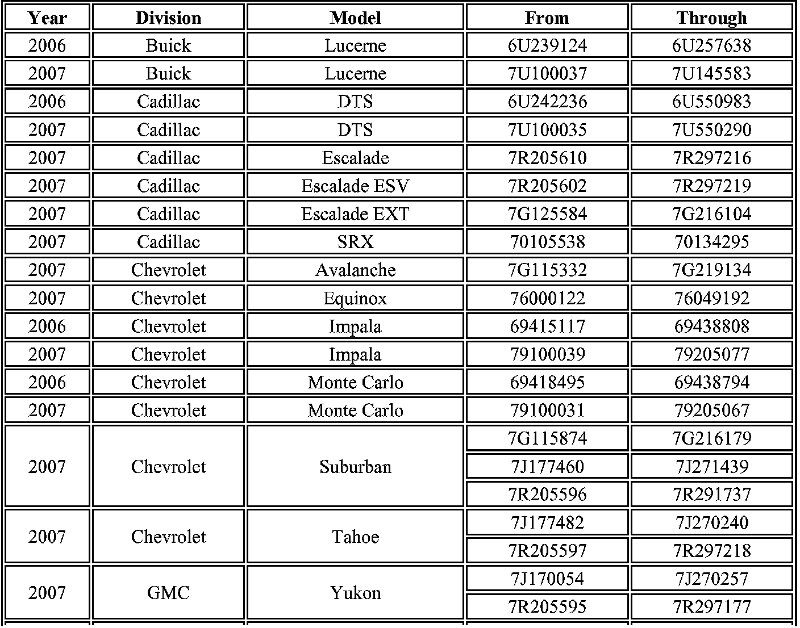
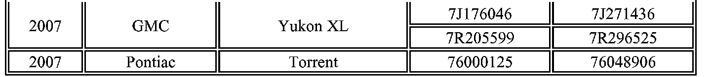
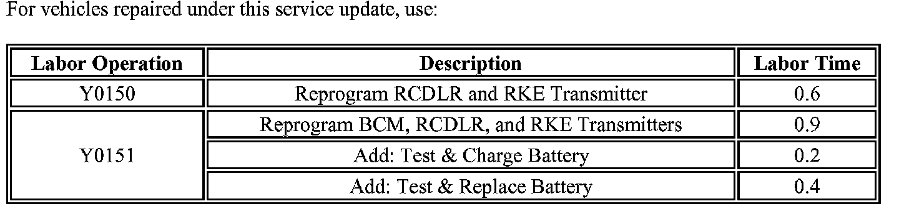

Campaign - Keyless Entry Transmitter/Module Programming: Overview
Subject:Service Update for Inventory and Customer Vehicles-Remote Keyless Entry (RKE) Inoperative and Battery Rundown - Expires with Base Warranty
# 07007C - (02/15/2007)
Models:
2006-2007 Buick Lucerne
2006-2007 Cadillac DTS
2007 Cadillac Escalade, Escalade ESV, Escalade EXT, SRX
2006-2007 Chevrolet Impala, Monte Carlo
2007 Chevrolet Avalanche, Equinox, Suburban, Tahoe
2007 GMC Yukon, Yukon XL
2007 Pontiac Torrent
THE SERVICE PROCEDURE IN THIS BULLETIN HAS BEEN REVISED TO ADDRESS VEHICLES WITHOUT A DRIVER INFORMATION CENTER (DIC) AND POWER DOOR LOCKS/WINDOWS, AND A CONDITION WHERE THE ODOMETER DISPLAYS METRIC UNITS INSTEAD OF ENGLISH UNITS.
DISCARD ALL COPIES OF BULLETIN 07007AB ISSUED FEBRUARY 2007.
TECHNICIAN MAY EXPERIENCE SLOW PERFORMANCE USING THE TIS2 WEB APPLICATION WHEN REPROGRAMMING THE VEHICLE TO CORRECT THE CONDITION TECHNICIANS MAY NOTICE THE SLOWER APPLICATION PERFORMANCE FROM MID-MORNING UNTIL LATE AFTERNOON
TO ASSIST IN IMPROVING PERFORMANCE AND REDUCE PROGRAMMING TIME IT IS RECOMMENDED TO COMPLETE THE BULLETIN PROCEDURE ON CUSTOMER VEHICLES FIRST. VEHICLES IN INVENTORY SHOULD BE PROGRAMMED USING OFF PEAK HOURS IF SLOW PERFORMANCE IS EXPERIENCED.
This bulletin provides a service procedure for reprogramming the remote control door lock receiver (RCDLR) and the remote keyless entry transmitter (FOB) on certain 2006-2007 Buick Lucerne; 2006-2007 Cadillac DTS; 2007 Cadillac Escalade, Escalade ESV, Escalade EXT, SRX; 2006-2007 Chevrolet Impala, Monte Carlo; 2007 Chevrolet Avalanche, Equinox, Suburban, Tahoe; 2007 GMC Yukon, Yukon XL; and 2007 Pontiac Torrent vehicles. On these vehicles, the RKE may become inoperative.
Also, for the 2007 Cadillac Escalade, Escalade ESV, Escalade EXT; Chevrolet Avalanche, Suburban, Tahoe; and GMC Yukon, Yukon XL vehicles (GMT900 Utility) only, this bulletin provides a service procedure for reprogramming the body control module (BCM). On these vehicles, and under certain conditions such as operating the radio with the engine off the battery can become discharged, preventing engine start-up.
This service procedure should be completed as soon as possible on involved vehicles currently in dealer inventory and customer vehicles that return to the dealer for any type of service during the New Vehicle Limited Warranty coverage period.


Vehicles Involved
A list of involved vehicles currently in dealer inventory is attached to the Administrative Message (US) or Dealer Communication (Canada) used to release this bulletin. Customer vehicles that return for service, for any reason, and are still covered under the vehicle's base warranty, and are within the VIN breakpoints provided below, should be checked for vehicle eligibility in the appropriate system listed below.
Important:
Dealers are to confirm vehicle eligibility prior to beginning repairs by using GMVIS. Not all vehicles within the above breakpoints may be involved.

Claim Information
Programming Remote Keyless Entry Transmitters Using the Driver Information Center (DIC)
All of the transmitters that are to be recognized by the remote control door lock receiver (RCDLR) must be programmed at the same time, including the one programmed at the dealership. Those transmitters not programmed at the same time will not function properly. Follow the procedure below for programming. This procedure is also published in the Owner Manual.
RELEARN REMOTE KEY
The Driver Information Center (DIC) display allows you to match the remote keyless entry transmitter to your vehicle. To match a remote keyless entry transmitter to your vehicle do the following:
1. Press the vehicle information button until RELEARN REMOTE KEY displays.
2. Press the set/reset button.
3. Press and hold the lock and unlock buttons on the first transmitter at the same time for approximately 15 seconds.
On vehicles with memory recall seats, the first transmitter learned will match driver 1 and the second will match driver 2.
4. To match additional transmitters at this time, repeat step 3 with each new transmitter. Each vehicle can have a maximum of eight transmitters matched to it.
5. To exit the programming mode, you must cycle the key to the OFF/LOCK position.

Disclaimer